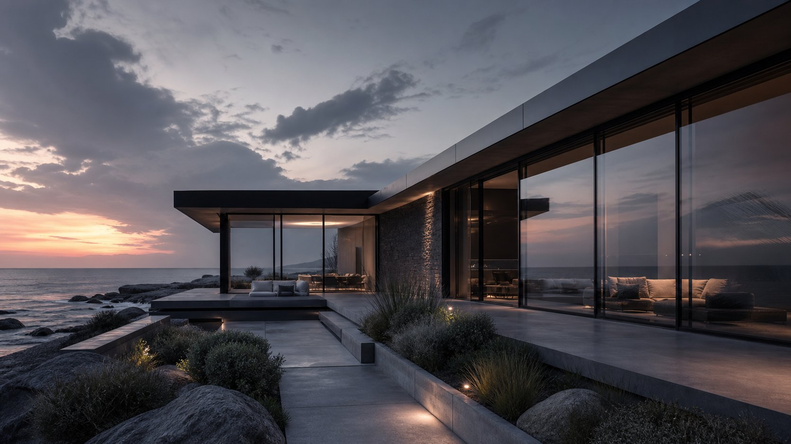

Selected work
Spaces built with intention.
A selection of residential, commercial, hospitality, retail, and joinery projects shaped by Woodex.

Work with a point of view.
Project facts, approved direction, materials, build details, and the finished result belong in each case study.